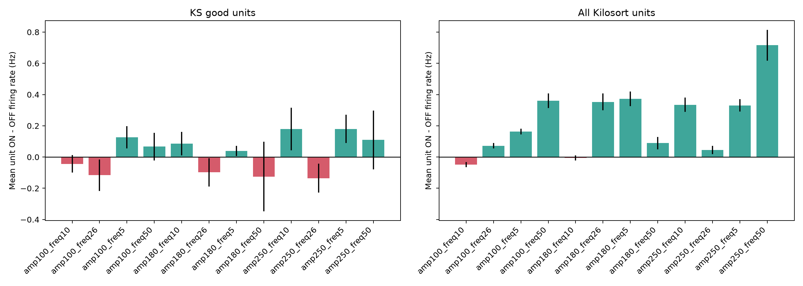
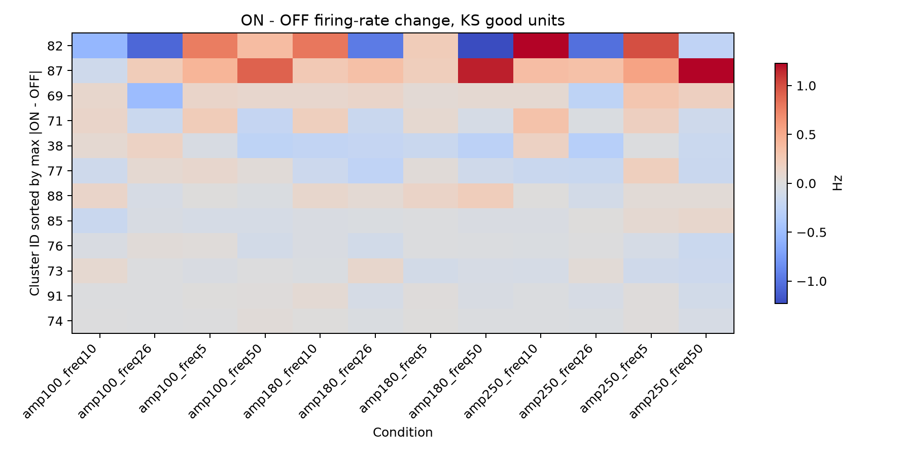
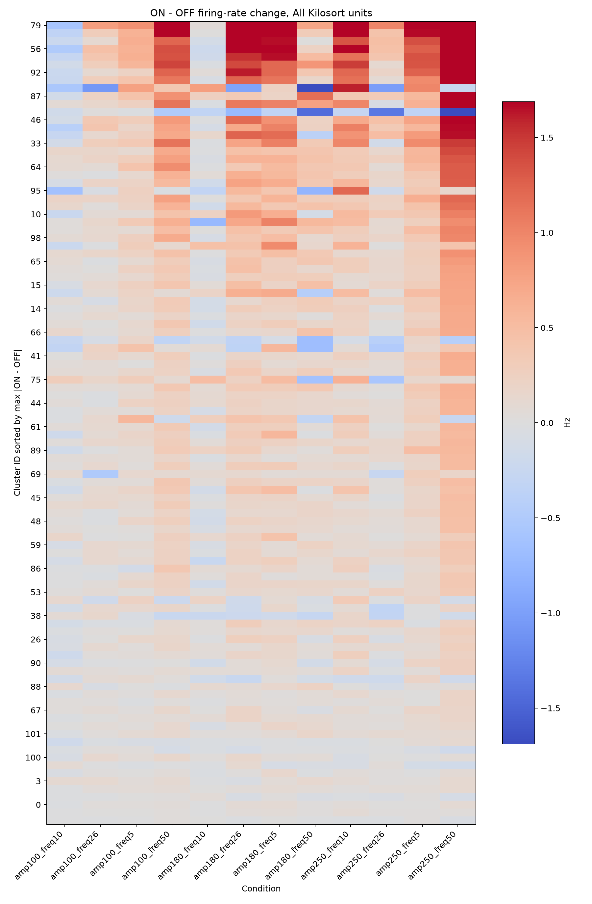
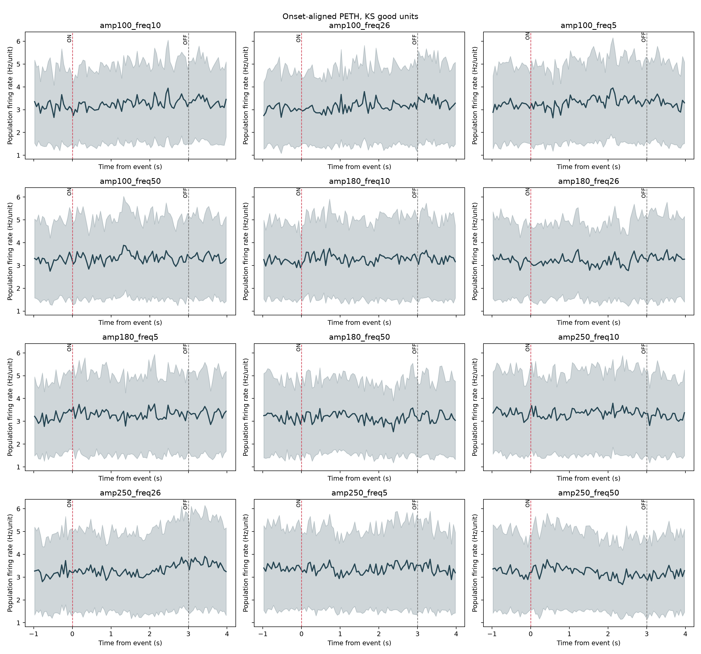
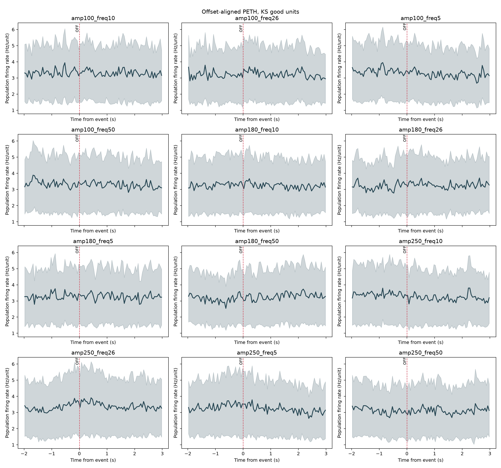

This is an uncurated first pass from Modal Kilosort4 output. The control is the 3 s OFF interval immediately after each 3 s stimulation ON interval.
1021224005054120




Caveat: use this for exploratory physiology only. Final spike claims need Phy curation and corrected probe geometry/channel order.